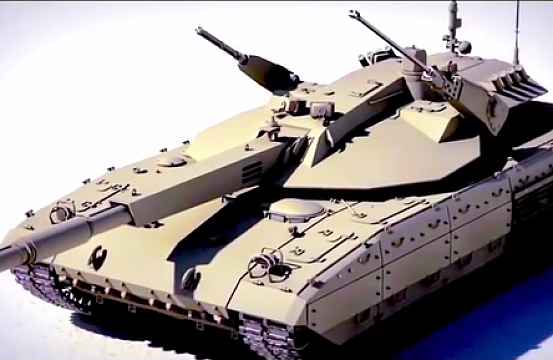
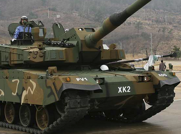
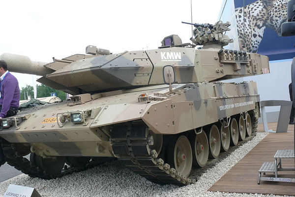
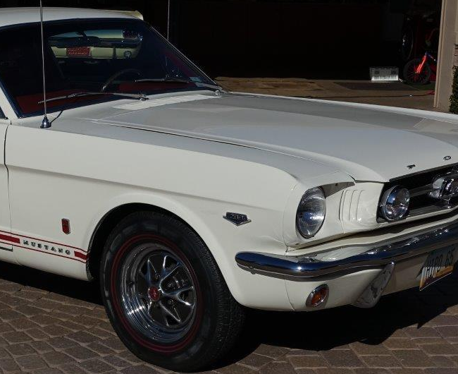
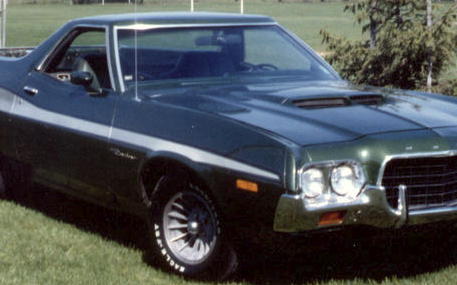
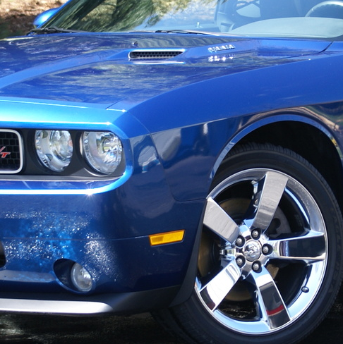

Class Posts
Click here to write posts
There will (probably) be new posts daily
Posts are sorted newest to oldest
Here is a list of current posts, click on any of the names to go to the post you clicked on:
DEADLIEST TANKS
Ameliorate Your Communique
ROBLOX Face
Cool Cars
Dates are written in format dd/mm/yyyy
Click here to go straight to the bottom of the page
DEADLIEST TANKS
Class: WWIII Preparation | Writer: Shaun
Post #4, published 12/03/2018
ATTENTION SOLDIERS. HERE ARE THE MOST DEADLY TANKS SO YOU CAN DEFEND YOURSELF FROM NORTH KOREA AND HELP THE AMERICAN ARMY.
T-14 ARMATA

THIS TANK IS EQUIPPED WITH A
2A82-1M,
12.7MM KORD MACHINE GUN, AND A
PKP PECHENEG. IT WAS BUILT BY RUSSIA.
K2 BLACK PANTHER

THIS TANK IS EQUIPPED WITH A
120MM RHEINMETALL SMOOTHBORE GUN,
12.7MM K6 HEAVY MACHINEGUN (SOUTH KOREAN VERSION OF
M2 BROWNING), AND A
7.62MM
COXIAL MACHINEGUN. IT WAS BUILT BY SOUTH KOREA.
LEOPARD 2A7+

THIS TANK IS EQUIPPED WITH A
120MM RHEINMETALL SMOOTHBORE GUN,
7.62MM MACHINE GUN, AND 40MM GRENADE LAUNCHERS. IT CAN ALSO BE USED WITH A .50 MACHINE GUN. IT WAS BUILT BY GERMANY.
IT IS CRUCIAL THAT YOU GET ONE OF THESE TANKS.
[NOTE FROM PRINCIPAL: Readers can click on a gun name to see what gun it is.]
[NOTE FROM PRINCIPAL: It is really hard to get a tank, and many tanks are illegal.]
Class: English | Writer: Shaun
Post #3, published 11/03/2018
It is simply
opprobrious how
lackluster the vocabulary is in previous bulletins.
The English class insists that any
subsequent publications use
magniloquent language.
[NOTE FROM PRINCIPAL: For convinience of the reader, all words that only the Stuff For Nerds class can understand can be clicked on to get the definition for that word.]
[NOTE FROM PRINCIPAL: Nobody has to do this when making a post.]
ROBLOX Face
Class: Dank Meme Making | Writer: Shaun
Post #2, published 11/03/2018
This post will explain why we believe the ROBLOX face is the best thing ever
For those of you who don't know, this is the ROBLOX face.
We believe the ROBLOX face is awesome because it is used in a lot of memes, and it represents a movement.
The movement it represents is Memeism. Memeism aims for true racial equality, positivity, and peace.
It represents Memeism because the lack of a race on the face signifies racial equality, the smile signifies positivity, and the harmlessness of the face signifies peace.
I have asked the Stuff For Nerds class to hack the
Discord server and make the face the icon and they agreed.
[NOTE FROM PRINCIPAL: After reading this post I have decided to make the face the icon, there is no need for them to hack it.]
Thank you for reading, I hope you agree.
Cool Cars
Class: Automotive Creation And Repair | Writer: Shaun
Post #1, published 10/03/2018
In this post we will go over the coolest cars, and if you disagree with this YOU'RE WRONG!!!
[NOTE FROM PRINCIPAL: You are not wrong if you disagree, it is all a matter of preferance.]
Car 1: Mustang 1965 "K" Code Fastback

This car is by far the best car ever made and if you disagree we will send you to Russia and force you into a gulag!
[NOTE FROM PRINCIPAL: This is an empty threat, we do not provide enough funding for them to do that.]
Car 2: Ford 1972 Ranchero GT Pickup

This car is also very good, it is currently used to transport car parts to and from the Automotive Creation And Repair class.
Car 3: Dodge 2009 Challenger

This car is great, the newest car on this list, and probably the best performing.
Thanks for reading this post, so that you can be educated on which cars are the best.
[NOTE FROM PRINCIPAL: If these cars are the best or not is debatable, however I do agree with these selections.]